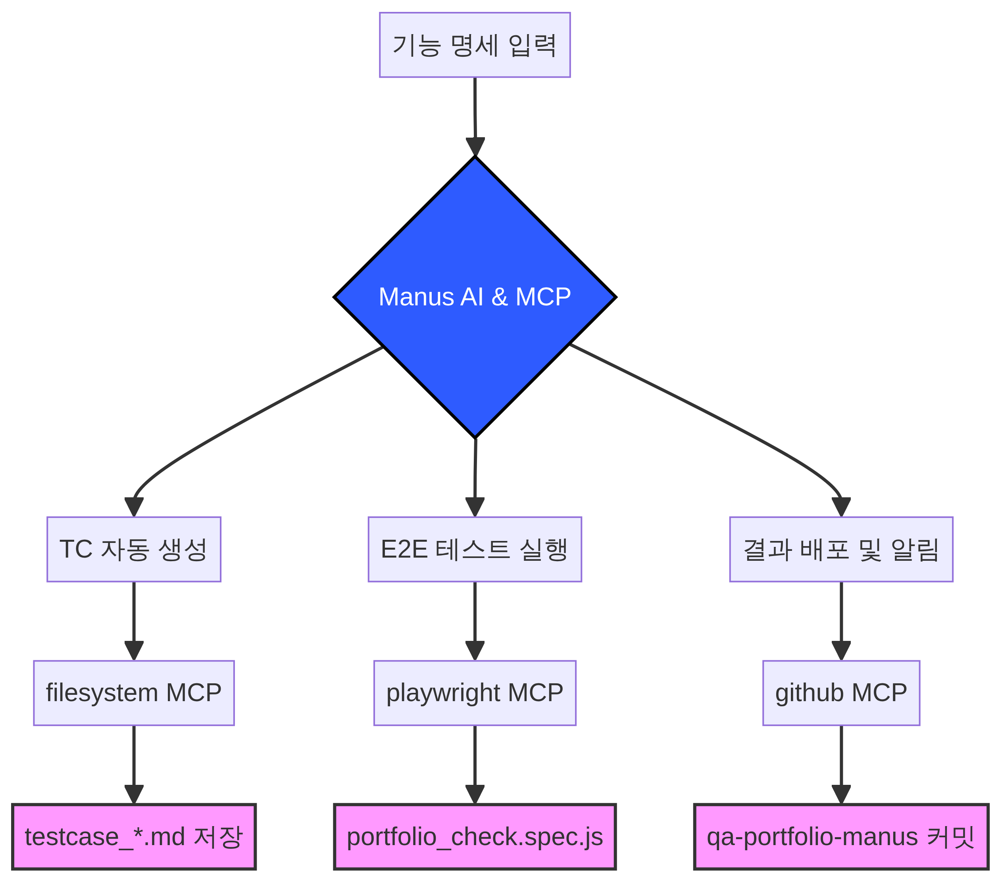

핵심 요약
다양한 도메인(모바일, IoT, AI, 반도체) 검증 경험을 바탕으로, 벙커키즈의 AI 캐릭터 채팅 서비스 품질 최적화에 즉시 기여하겠습니다. 특히 AI 음성 시스템 검증 경험을 통해 자연어 기반 AI 에이전트의 응답 정확성 및 컨텍스트 유지 여부 검증에 강점을 가지고 있습니다.
QA 자동화 파이프라인

Manus AI와 MCP를 활용한 QA 자동화 워크플로우 (기능 명세 → TC 생성 → 테스트 실행 → 결과 배포)
증거 자료 (Artifacts)
AI 오케스트레이션
클로드 vs Manus: AI 파트너 활용 비교
QA 엔지니어로서 AI 도구를 단순 활용하는 것을 넘어, 각 AI의 특성을 이해하고 최적의 워크플로우를 설계하는 AI 오케스트레이션 역량을 보여줍니다.
| 구분 | 클로드 (Claude) | Manus (현재 프로젝트) |
|---|---|---|
| 작업 기간 | 약 1개월 | 약 5분 (핵심 구축 시간) |
| 주요 역할 | 아이디어 구체화, 코드 생성 가이드 | 자율적 실행, MCP 연동, 결과물 배포 |
| 활용 방식 | 대화 기반 지시 및 코드 복사/붙여넣기 | API 및 CLI 기반 직접 제어, 자동화 파이프라인 구축 |
| 결과물 | QA 포트폴리오 (코드, 문서) | QA 포트폴리오 (코드, 문서, 자동화 파이프라인, 웹 배포) |
경력 사항
두플
QA 파트장
2024.11 — 2025.02 (4개월)
- 반도체 공정 시뮬레이션 시스템 검증 공정 변수 변동에 따른 결과 정합성 검증 및 오차 재현·검증
- QA 프로세스 운영 Jira 기반 이슈 트래킹 및 유관 부서 협업 현황 공유
IMS Mobility
QA 대리
2022.03 — 2024.02 (2년)
- 모바일 앱 / 웹 / 백오피스 통합 검증 차량 호출·결제·반납 전 과정 사용자 흐름 기반 시나리오 설계 및 검증
- 기술 기반 품질 검증 수행 Swagger 기반 API 정합성 직접 검증 및 Cypress 활용 시나리오 자동화
- 결제 시스템 검증 국내 주요 카드사 및 간편결제 승인·취소 전 흐름 검증
모비프렌 (삼성전자 파트너)
QA 주임
2017.09 — 2022.01 (4년 4개월)
- AI 음성 인식 및 IoT 연동 품질 검증 Bixby AI 음성 인식 정확도 및 응답 품질, 소음 환경별 안정성 검증
- 멀티 디바이스 연동성 검증 SmartThings 다중 기기 연동 및 상태 동기화 기능 검증
- 이슈 분석 및 원인 파악 로그 추출 및 분석을 통한 이슈 재현 및 수정 확인 후 개발팀 전달